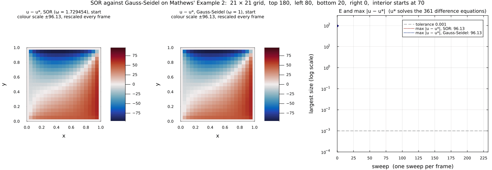

Elliptic PDE’s
Source inspiration: (Mathew 2000-2019).
Description
Laplace’s equation \(u_{xx} + u_{yy} = 0\) describes a steady state, such as the temperature \(u(x, y)\) in a thin plate long after the heat has stopped flowing. Here it is solved on a rectangle \(R = [0, a] \times [0, b]\) whose edges are held at known values (a Dirichlet problem), or with one edge insulated, \(\partial u / \partial N = 0\) (a Neumann condition). The rectangle is covered by a grid of \(n \times m\) points with equal spacing \(h\) in both directions, and at every interior grid point the Laplacian is replaced by the five-point difference formula. Writing \(u_{i,j}\) for the approximation to \(u(x_i, y_j)\), the equation at each interior point says that \(u_{i,j}\) is the average of its four neighbours:
\[ u_{i+1,j} + u_{i-1,j} + u_{i,j+1} + u_{i,j-1} - 4u_{i,j} = 0 . \]
These equations form a large, sparse linear system. Mathews solves it by iteration: starting from a guess at every interior point, he sweeps across the grid again and again, and moves each value toward the average of its neighbours by successive over-relaxation (SOR),
\[ u_{i,j} \leftarrow u_{i,j} + \omega\, r_{i,j}, \qquad r_{i,j} = \frac{u_{i+1,j} + u_{i-1,j} + u_{i,j+1} + u_{i,j-1} - 4u_{i,j}}{4}, \]
with the relaxation parameter \(\omega\) between \(1\) and \(2\). His programs stop once the largest correction \(\lvert \omega r_{i,j} \rvert\) in a sweep is below \(0.001\). The sweeps carry the grid from the flat starting guess to the steady state, which on a \(9 \times 9\) grid takes \(20\) sweeps for the plate whose edges are held at \(180\), \(80\), \(20\) and \(0\) (Example 1).
Animations
Each animation below runs one of Mathews’ SOR programs one sweep per frame, with his starting values, his sweep order and his stopping test, and draws the grid on the unit square (on a square the grid values do not depend on the side length). A panel on a logarithmic scale follows two numbers per sweep: the largest change \(E\), which is what the program prints and compares with \(0.001\), and the largest difference \(\max \lvert u - u^* \rvert\) between the grid and the exact solution \(u^*\) of the difference equations, found by Gaussian elimination, which the program never sees. Case 1 shows how the grid settles; Case 2 adds the insulated edge of the Neumann program and a better \(\omega\); Case 3 compares SOR with Gauss-Seidel; and Case 4 measures the error against the exact solution of Laplace’s equation, which no number of sweeps removes.
Mathews’ module links no animation, and his animation archive has none for partial differential equations, so all four animations are new, with no Mathews original. Cases 1 to 4 animate Examples 1, 3, 2 and 6 with the set-ups described in them (for Examples 2 and 6, whose set-up images are missing, the set-ups this page chose); Case 3 adds the Gauss-Seidel run, Case 2 the run with \(\omega = 1.5325\), and Case 4 continues the iteration past the program’s stop. Not animated are Example 4, which is the run of Example 1 with relabelled axes, Example 5, which repeats Example 1 with the table stored by coordinates and stops after \(19\) sweeps, the \(5 \times 5\) linear system and the nine-point formula of the theory, the comparison with the Fourier series in Example 2 and the refinement table of Example 6. Case 1 draws Mathews’ surface and contour plot of Example 1 (his contour levels \(0, 15, \ldots, 180\)), but over \(x\) and \(y\) instead of row and column numbers and from a different viewpoint.
Julia source scripts that generated these animations are linked under each case.
Case 1 — Example 1: SOR on the \(9 \times 9\) grid, \(\omega = 1.446463\)
Behavior: The interior starts flat at \(70\), and the sweeps carry the edge values into the plate. After ten sweeps no grid value is more than \(1.080\) from \(u^*\), too little to see at the scale of the surface and the contours, and the later sweeps show mainly in the log panel. Both \(E\) and \(\max \lvert u - u^* \rvert\) decrease at every sweep, \(E\) from \(66.0101\) in the first sweep to \(0.000605833\) in the \(20\)th, where the program stops, and \(\max \lvert u - u^* \rvert\) from \(75.41\) at the start to \(0.000672\). The centre value is then \(70.0003\); for the difference equations it is exactly \(70\).

Case 2 — Example 3: an insulated bottom edge, \(\omega = 1.446463\) against \(\omega = 1.5325\)
Behavior: The seven values on the insulated edge are unknowns too. They start on the straight line from \(80\) to \(0\). In the first sweeps a hump well above the exact values \(75.98, 71.06, \ldots, 16.15\) of the difference equations moves to the left along the edge, up to about \(16\) above them in Mathews’ run and about \(18\) with \(\omega = 1.5325\). The values then settle onto the exact values from above (with \(\omega = 1.5325\) apart from a dip of \(0.59\) below them at \(x = 0.125\) in sweep \(8\)) and are within \(1\) of them by sweep \(11\) in Mathews’ run and by sweep \(8\) with \(\omega = 1.5325\); the contour lines meet the insulated edge nearly at right angles, as \(\partial u / \partial N = 0\) requires. In both runs \(E\) and \(\max \lvert u - u^* \rvert\) decrease at every sweep. Mathews’ run, with \(\omega = 1.446463\) from formula (11), stops at sweep \(30\) with \(E = 0.000998\) while the grid is still \(0.00273\) from \(u^*\), more than the tolerance. With \(\omega = 1.5325\), near the optimum for this mixed problem, the run stops at sweep \(23\), within \(0.000392\) of \(u^*\).

Case 3 — Example 2: SOR against Gauss-Seidel on the \(21 \times 21\) grid
Behavior: Both runs start \(96.13\) from \(u^*\), and the two left panels show the error \(u - u^*\) of each, each on its own colour scale, rescaled every frame. SOR with \(\omega = 1.729454\) stops at sweep \(47\) with \(E = 0.000753\), within \(0.00234\) of \(u^*\); at the same sweep Gauss-Seidel is still \(5.309\) from it, with errors of both signs. SOR’s \(E\) rises only once, at sweep \(39\), at the grid point \((0.05, 0.95)\) next to the top-left corner, where the edge values jump from \(180\) to \(80\) and where the largest error sits in sweeps \(38\) and \(39\). After sweep \(47\) the animation advances Gauss-Seidel \(10\) sweeps per frame. Its \(E\) decreases at every sweep and falls below \(0.001\) at sweep \(227\), but each Gauss-Seidel sweep changes the grid so little that the grid is then still \(0.0394\) from \(u^*\), \(39\) times the tolerance: its error has become a single smooth bump, positive at every interior point from sweep \(81\) on and largest at the centre from sweep \(109\) on, that shrinks by a factor between \(0.970\) and \(0.976\) per sweep.

Case 4 — Example 6: continuous boundary values, the error against Laplace’s equation
Behavior: From the start at \(0\), \(E\) falls from \(1.40154\) in the first sweep to \(0.000865966\) in the \(40\)th, where the program stops, rising once, at sweep \(39\). The middle panel shows the error against the exact solution \(u_{\text{exact}}\) of Laplace’s equation (the Fourier series of Example 6), on a colour scale rescaled every frame. When the program stops, \(\max \lvert u - u_{\text{exact}} \rvert = 0.000324\), less than the discretisation error \(\max \lvert u^* - u_{\text{exact}} \rvert = 0.000476\) of the \(21 \times 21\) grid, because the iteration error left at that sweep partly cancels it. The animation continues the iteration to sweep \(60\): \(\max \lvert u - u^* \rvert\) keeps falling, to \(7.69 \times 10^{-7}\), but \(\max \lvert u - u_{\text{exact}} \rvert\) rises at every sweep after the \(40\)th, to \(0.000475\), and the error map settles on the discretisation error of the five-point formula, largest at \((0.5, 0.25)\). More sweeps solve the difference equations more exactly; only a finer grid brings them closer to Laplace’s equation.

Elliptic Equations
Recall that the Laplacian of a function \(u(x, y)\) is
\[ \nabla^2 u = u_{xx} + u_{yy}. \tag{1} \]
With \(f\) and \(g\) given functions of \((x, y)\), the three model elliptic equations are
\[ \begin{aligned} \nabla^2 u &= 0 &&\text{(Laplace's equation)}, \\ \nabla^2 u &= g(x, y) &&\text{(Poisson's equation)}, \\ \nabla^2 u + f(x, y)\,u &= g(x, y) &&\text{(Helmholtz's equation)}. \end{aligned} \tag{2} \]
It is often the case that the values of \(u(x, y)\) are known at all points on the sides of a rectangle \(R\). Each of these equations can then be solved by the finite-difference method. This page works with Laplace’s equation, which is the subject of all of Mathews’ examples; the formulas for Poisson’s and Helmholtz’s equations are given at the end of the theory.
The Laplacian Difference Equation
For a function with four continuous derivatives, the central-difference formula for the second derivative is
\[ f''(x) = \frac{f(x + h) - 2f(x) + f(x - h)}{h^2} + O(h^2). \tag{3} \]
Applying it to \(u_{xx}\) and \(u_{yy}\) and adding gives
\[ \nabla^2 u = \frac{u(x + h, y) + u(x - h, y) + u(x, y + h) + u(x, y - h) - 4u(x, y)}{h^2} + O(h^2). \tag{4} \]
The grid
The rectangle \(R = \{(x, y) : 0 \le x \le a,\ 0 \le y \le b\}\) is covered by the grid points
\[ x_i = (i - 1)h, \quad i = 1, \ldots, n, \qquad y_j = (j - 1)h, \quad j = 1, \ldots, m, \]
so that \(a = (n - 1)h\) and \(b = (m - 1)h\), and \(R\) is divided into \((n - 1) \times (m - 1)\) squares of side \(h\). (Mathews’ text writes \(a = nh\) and \(b = mh\), but with \(n\) grid points across there are \(n - 1\) intervals, and his own program for Example 5 uses \(h = a/(n - 1)\).) The grid points with \(i = 1\) or \(n\), or \(j = 1\) or \(m\), lie on the edges of \(R\); the others are interior points.
Dropping the \(O(h^2)\) term in (4), setting the result to zero and multiplying by \(h^2\) gives one equation for each interior point.
At each interior grid point, \(i = 2, \ldots, n - 1\) and \(j = 2, \ldots, m - 1\),
\[ u_{i+1,j} + u_{i-1,j} + u_{i,j+1} + u_{i,j-1} - 4u_{i,j} = 0. \tag{5} \]
Equivalently, \(u_{i,j}\) is the average of its four neighbours. The spacing \(h\) has dropped out, so on a square the grid values depend only on the number of grid points and the boundary values, not on the side length.
The values on the edges are known:
\[ \begin{aligned} u_{1,j} &= u(0, y_j), & u_{n,j} &= u(a, y_j), && j = 2, \ldots, m - 1 && \text{(left and right)}, \\ u_{i,1} &= u(x_i, 0), & u_{i,m} &= u(x_i, b), && i = 2, \ldots, n - 1 && \text{(bottom and top)}. \end{aligned} \tag{6} \]
The four corner values never appear in (5), because the five-point stencil never reaches diagonally. Mathews’ programs set each corner to the average of its two neighbours on the edges, which affects only the plots.
Setting up the linear system
Applying (5) at each of the \((n - 2)(m - 2)\) interior points gives a linear system with one unknown for each interior point. For a small illustration (Example 10.5 of the textbook section that the module accompanies), take the boundary values of Examples 1 to 5 below on a \(5 \times 5\) grid: \(u = 180\) on the top edge, \(80\) on the left, \(20\) on the bottom and \(0\) on the right. Number the nine interior values row by row from the bottom left:
\[ \begin{array}{ccccc} & 180 & 180 & 180 & \\ 80 & p_7 & p_8 & p_9 & 0 \\ 80 & p_4 & p_5 & p_6 & 0 \\ 80 & p_1 & p_2 & p_3 & 0 \\ & 20 & 20 & 20 & \end{array} \]
Formula (5) at \(p_1\) reads \(p_2 + p_4 + 20 + 80 - 4p_1 = 0\), and in the same way at the other eight points, so the system \(A P = B\) is
\[ \begin{aligned} -4p_1 + p_2 + p_4 &= -100 \\ p_1 - 4p_2 + p_3 + p_5 &= -20 \\ p_2 - 4p_3 + p_6 &= -20 \\ p_1 - 4p_4 + p_5 + p_7 &= -80 \\ p_2 + p_4 - 4p_5 + p_6 + p_8 &= 0 \\ p_3 + p_5 - 4p_6 + p_9 &= 0 \\ p_4 - 4p_7 + p_8 &= -260 \\ p_5 + p_7 - 4p_8 + p_9 &= -180 \\ p_6 + p_8 - 4p_9 &= -180. \end{aligned} \]
Gaussian elimination in exact arithmetic gives
\[ P = \Bigl(\tfrac{390}{7},\ \tfrac{605}{14},\ \tfrac{190}{7},\ \tfrac{1115}{14},\ 70,\ \tfrac{635}{14},\ \tfrac{790}{7},\ \tfrac{1565}{14},\ \tfrac{590}{7}\Bigr) \approx (55.7143,\ 43.2143,\ 27.1429,\ 79.6429,\ 70,\ 45.3571,\ 112.8571,\ 111.7857,\ 84.2857). \]
Verification (exact fractions substituted into each equation):
| Point | Left-hand side | Right-hand side |
|---|---|---|
| \(p_1\) | \(-4 \cdot \tfrac{390}{7} + \tfrac{605}{14} + \tfrac{1115}{14} = \tfrac{-3120 + 605 + 1115}{14}\) | \(-100 \ \checkmark\) |
| \(p_2\) | \(\tfrac{390}{7} - 4 \cdot \tfrac{605}{14} + \tfrac{190}{7} + 70 = \tfrac{780 - 2420 + 380 + 980}{14}\) | \(-20 \ \checkmark\) |
| \(p_3\) | \(\tfrac{605}{14} - 4 \cdot \tfrac{190}{7} + \tfrac{635}{14} = \tfrac{605 - 1520 + 635}{14}\) | \(-20 \ \checkmark\) |
| \(p_4\) | \(\tfrac{390}{7} - 4 \cdot \tfrac{1115}{14} + 70 + \tfrac{790}{7} = \tfrac{780 - 4460 + 980 + 1580}{14}\) | \(-80 \ \checkmark\) |
| \(p_5\) | \(\tfrac{605}{14} + \tfrac{1115}{14} - 280 + \tfrac{635}{14} + \tfrac{1565}{14} = \tfrac{3920}{14} - 280\) | \(0 \ \checkmark\) |
| \(p_6\) | \(\tfrac{190}{7} + 70 - 4 \cdot \tfrac{635}{14} + \tfrac{590}{7} = \tfrac{380 + 980 - 2540 + 1180}{14}\) | \(0 \ \checkmark\) |
| \(p_7\) | \(\tfrac{1115}{14} - 4 \cdot \tfrac{790}{7} + \tfrac{1565}{14} = \tfrac{1115 - 6320 + 1565}{14}\) | \(-260 \ \checkmark\) |
| \(p_8\) | \(70 + \tfrac{790}{7} - 4 \cdot \tfrac{1565}{14} + \tfrac{590}{7} = \tfrac{980 + 1580 - 6260 + 1180}{14}\) | \(-180 \ \checkmark\) |
| \(p_9\) | \(\tfrac{635}{14} + \tfrac{1565}{14} - 4 \cdot \tfrac{590}{7} = \tfrac{635 + 1565 - 4720}{14}\) | \(-180 \ \checkmark\) |
The centre value \(p_5 = 70\) is exactly the average of the four edge values, \((180 + 80 + 20 + 0)/4\). This holds on any square grid with an odd number of points per side: rotating the square by quarter turns permutes the four edges, and the four rotated problems add up to the problem with the same value on every edge, whose solution is constant.
On a finer grid the system grows quickly, \((n - 2)(m - 2)\) equations, while an iterative method only has to store the \(nm\) grid values. That is the reason for the iteration in the next section.
Derivative boundary conditions
A Neumann condition prescribes the derivative of \(u\) normal to an edge. The zero normal derivative
\[ \frac{\partial u}{\partial N} = 0 \tag{7} \]
means, for heat flow, that the edge is insulated. On the right edge \(x = a\) this is \(u_x(x_n, y_j) = 0\), and the values \(u_{n,j}\) become unknowns. The five-point formula at \((x_n, y_j)\) needs the value \(u_{n+1,j}\) at a point outside \(R\); the central difference \(\bigl(u_{n+1,j} - u_{n-1,j}\bigr)/(2h) \approx u_x(x_n, y_j) = 0\), which has error \(O(h^2)\), replaces it by \(u_{n-1,j}\). The same argument on each edge gives the Neumann stencils.
\[ \begin{aligned} 2u_{i,2} + u_{i-1,1} + u_{i+1,1} - 4u_{i,1} &= 0 &&\text{(bottom edge)}, \\ 2u_{i,m-1} + u_{i-1,m} + u_{i+1,m} - 4u_{i,m} &= 0 &&\text{(top edge)}, \\ 2u_{2,j} + u_{1,j-1} + u_{1,j+1} - 4u_{1,j} &= 0 &&\text{(left edge)}, \\ 2u_{n-1,j} + u_{n,j-1} + u_{n,j+1} - 4u_{n,j} &= 0 &&\text{(right edge)}. \end{aligned} \tag{8} \]
When the derivative condition holds on part of the boundary and values of \(u\) are given on the rest, the problem is called mixed. The equations at the points of an insulated edge use the matching stencil in (8), and the five-point formula (5) is used at the interior points.
Iterative Solution by Successive Over-Relaxation
Write the five-point formula (5) in a form suitable for iteration:
\[ u_{i,j} \leftarrow u_{i,j} + r_{i,j}, \qquad r_{i,j} = \frac{u_{i+1,j} + u_{i-1,j} + u_{i,j+1} + u_{i,j-1} - 4u_{i,j}}{4}, \tag{9} \]
for \(i = 2, \ldots, n - 1\) and \(j = 2, \ldots, m - 1\). Each update replaces \(u_{i,j}\) by the average of its four neighbours, and the residual \(r_{i,j}\) is zero exactly when (5) holds at that point. Starting values must be supplied at every interior point; Mathews’ text suggests the average of the boundary values, and every one of his set-ups that survives starts each interior point at \(70\). One iteration, or sweep, applies (9) once at every interior point, using each new value as soon as it has been computed (this is the Gauss-Seidel method). Over-relaxation moves each value further in the same direction:
\[ u_{i,j} \leftarrow u_{i,j} + \omega\, r_{i,j}, \qquad 1 \le \omega < 2. \tag{10} \]
With \(\omega = 1\), (10) is the Gauss-Seidel sweep (9).
For the five-point equations (5) of a Dirichlet problem on an \(n \times m\) grid, swept in a row-by-row or column-by-column order, the SOR iteration converges fastest for
\[ \omega = \frac{4}{2 + \sqrt{4 - \Bigl(\cos\dfrac{\pi}{n - 1} + \cos\dfrac{\pi}{m - 1}\Bigr)^2}} . \tag{11} \]
It follows from Young’s theory of the eigenvalues of SOR iteration matrices. For \(n = m = 9\), (11) gives \(\omega = 1.446463\), and for \(n = m = 21\) it gives \(\omega = 1.729454\). For both grids, computing the eigenvalues of the SOR iteration matrix in Mathews’ sweep order confirms that (11) minimises its spectral radius, which is then \(\omega - 1\): \(0.446463\) against \(0.853553\) for Gauss-Seidel on the \(9 \times 9\) grid, and \(0.729454\) against \(0.975528\) on the \(21 \times 21\) grid.
If the Neumann condition holds on an edge, the stencils (8) are relaxed in the same way; for example, on an insulated bottom edge,
\[ u_{i,1} \leftarrow u_{i,1} + \omega\, \frac{2u_{i,2} + u_{i-1,1} + u_{i+1,1} - 4u_{i,1}}{4}, \tag{12} \]
and similarly with the top, left and right stencils of (8). Formula (11) is derived for the Dirichlet problem only; Example 3 shows that it is not the best \(\omega\) for a mixed problem.
Algorithm
Mathews’ two programs carry out the following steps.
- Grid and starting values. Store the \(n \times m\) grid values in a table, put the boundary values (6) on the edges, set each corner to the average of its two neighbours on the edges, and set every interior value to \(70\). The Neumann program treats an insulated bottom edge, whose values are then unknowns too; in Example 3 their starting values are interpolated linearly between the two bottom corners.
- Relaxation parameter. Compute \(\omega\) from (11).
- Sweep. For each column of interior points in turn, and down each column, compute the correction \(\omega\, r_{i,j}\) from (10) and add it to \(u_{i,j}\) at once. In the Neumann program, then sweep the points of the bottom edge, between the corners, with formula (12).
- Record the change. Let \(E\) be the largest \(\lvert \omega\, r_{i,j} \rvert\) of the sweep, each correction computed with the values current at the moment it is made, and print it as the “max grid change”.
- Stop or repeat. Repeat steps 3 and 4 while \(E > 0.001\), for at most \(71\) sweeps.
A small final correction does not mean the grid values are within \(0.001\) of the solution of the linear system. In Example 3 the last sweep changes no value by more than \(0.000998\), but the result still differs from the exact solution of the difference equations by up to \(0.0027\). And for a smooth solution, the solution of the difference equations differs from that of the differential equation by an amount of order \(h^2\), which no number of sweeps removes.
Poisson’s and Helmholtz’s equations
With \(g_{i,j} = g(x_i, y_j)\) and \(f_{i,j} = f(x_i, y_j)\), the same derivation turns Poisson’s equation \(\nabla^2 u = g\) into the iteration
\[ u_{i,j} \leftarrow u_{i,j} + \frac{u_{i+1,j} + u_{i-1,j} + u_{i,j+1} + u_{i,j-1} - 4u_{i,j} - h^2 g_{i,j}}{4}, \tag{13} \]
and Helmholtz’s equation \(\nabla^2 u + f u = g\) into
\[ u_{i,j} \leftarrow u_{i,j} + \frac{u_{i+1,j} + u_{i-1,j} + u_{i,j+1} + u_{i,j-1} - (4 - h^2 f_{i,j})\, u_{i,j} - h^2 g_{i,j}}{4 - h^2 f_{i,j}} . \tag{14} \]
In both, the update makes the difference equation hold at \((x_i, y_j)\), and the correction can be multiplied by \(\omega\) as in (10). Unlike (5), these equations depend on \(h\).
Improvement: the nine-point formula
A more accurate approximation to the Laplacian also uses the four diagonal neighbours:
\[ \nabla^2 u_{i,j} \approx \frac{1}{6h^2}\Bigl(u_{i+1,j-1} + u_{i-1,j-1} + u_{i+1,j+1} + u_{i-1,j+1} + 4u_{i+1,j} + 4u_{i-1,j} + 4u_{i,j+1} + 4u_{i,j-1} - 20u_{i,j}\Bigr). \tag{15} \]
For a function that satisfies Laplace’s equation, Mathews gives the truncation errors of the nine-point and five-point formulas as \(O(h^4)\) and \(O(h^2)\). Applied to the harmonic functions \(e^x \sin y\), \(\ln\bigl((x + 2)^2 + (y + 1)^2\bigr)\) and \(\operatorname{Re}(x + iy)^8\) at the point \((0.3, 0.4)\), the five-point error falls by a factor of \(4.0\) each time \(h\) is halved, and the nine-point error by a factor of \(64.0\), that is, \(O(h^6)\), which is better still. The advantage depends on \(\nabla^2 u = 0\): for a function that is not harmonic, such as \(e^x \sin 2y\), both formulas are only \(O(h^2)\).
Example 1 — Laplace’s equation on a \(9 \times 9\) grid
Solve Laplace’s equation on a \(9 \times 9\) grid with the boundary values
\[ \text{top: } 180, \qquad \text{left: } 80, \qquad \text{bottom: } 20, \qquad \text{right: } 0. \]
Mathews gives no side length; by the remark under (5), the grid values are the same for every square. Example 4 takes the unit square, so \(h = 1/8\), and the textbook takes \([0, 4] \times [0, 4]\), so \(h = 1/2\).
Step 1 — Set up the grid. Mathews stores the grid as a \(9 \times 9\) table laid out like the plate, with row \(1\) at the top. The top row is \(180\), the left column \(80\), the bottom row \(20\) and the right column \(0\); the corners are the averages \(130\) (top left), \(90\) (top right), \(50\) (bottom left) and \(10\) (bottom right), and the \(49\) interior values start at \(70\).
Step 2 — Relaxation parameter. With \(n = m = 9\), formula (11) gives \(\omega = 1.446463\).
Step 3 — Sweep. Each sweep runs through the interior columns from left to right and down each column from the top, applying (10). The printed largest change \(E\) decreases at every sweep and drops below \(0.001\) at the \(20\)th sweep:
| Sweep | \(E\) | Sweep | \(E\) | Sweep | \(E\) | Sweep | \(E\) |
|---|---|---|---|---|---|---|---|
| 1 | \(66.0101\) | 6 | \(4.94244\) | 11 | \(0.888045\) | 16 | \(0.0109666\) |
| 2 | \(34.2392\) | 7 | \(3.87342\) | 12 | \(0.42686\) | 17 | \(0.00809915\) |
| 3 | \(16.1658\) | 8 | \(2.92477\) | 13 | \(0.199111\) | 18 | \(0.00254555\) |
| 4 | \(10.6011\) | 9 | \(2.16123\) | 14 | \(0.166732\) | 19 | \(0.00118546\) |
| 5 | \(6.95448\) | 10 | \(1.40965\) | 15 | \(0.0854568\) | 20 | \(0.000605833\) |
Our recomputation reproduces each of Mathews’ \(20\) printed values to the digits he prints. (The textbook describes the same run as “19 iterations” with residual \(\le 0.000606\); the program prints \(20\) sweeps, and \(0.000605833\) is the largest correction \(\lvert \omega r_{i,j} \rvert\) of the last one.)
Step 4 — Result. The grid values after \(20\) sweeps, with \(y_9\) the top row:
| \(x_1\) | \(x_2\) | \(x_3\) | \(x_4\) | \(x_5\) | \(x_6\) | \(x_7\) | \(x_8\) | \(x_9\) | |
|---|---|---|---|---|---|---|---|---|---|
| \(y_9\) | \(130\) | \(180\) | \(180\) | \(180\) | \(180\) | \(180\) | \(180\) | \(180\) | \(90\) |
| \(y_8\) | \(80\) | \(125.8212\) | \(141.1723\) | \(145.4140\) | \(144.0046\) | \(137.4782\) | \(122.6424\) | \(88.6070\) | \(0\) |
| \(y_7\) | \(80\) | \(102.1122\) | \(113.4534\) | \(116.4787\) | \(113.1261\) | \(103.2656\) | \(84.4844\) | \(51.7856\) | \(0\) |
| \(y_6\) | \(80\) | \(89.1736\) | \(94.0499\) | \(93.9210\) | \(88.7553\) | \(77.9737\) | \(60.2439\) | \(34.0510\) | \(0\) |
| \(y_5\) | \(80\) | \(80.5319\) | \(79.6515\) | \(76.3999\) | \(70.0003\) | \(59.6301\) | \(44.4667\) | \(24.1744\) | \(0\) |
| \(y_4\) | \(80\) | \(73.3023\) | \(67.6241\) | \(62.0267\) | \(55.2159\) | \(46.0796\) | \(33.8184\) | \(18.1798\) | \(0\) |
| \(y_3\) | \(80\) | \(65.0528\) | \(55.5159\) | \(48.8671\) | \(42.7568\) | \(35.6543\) | \(26.5473\) | \(14.7266\) | \(0\) |
| \(y_2\) | \(80\) | \(51.3931\) | \(40.5195\) | \(35.1691\) | \(31.2899\) | \(27.2335\) | \(21.9900\) | \(14.1791\) | \(0\) |
| \(y_1\) | \(50\) | \(20\) | \(20\) | \(20\) | \(20\) | \(20\) | \(20\) | \(20\) | \(10\) |
These agree with the table Mathews prints to its four significant figures. (The textbook’s Table 10.6 shows the same run, but its first interior entry reads \(124.821\); the computation, and the module’s own printout of \(125.8\), give \(125.821\).)
Verification.
- Residuals. Substituting the final values into (5), the largest residual is \(\lvert r_{i,j} \rvert = 0.000138\).
- Exact solution of the difference equations. Solving the \(49\) equations (5) directly by sparse Gaussian elimination gives values whose largest difference from the table is \(0.00067\).
- Centre value. By the symmetry argument under the \(5 \times 5\) example, the solution of the difference equations at the centre is exactly \(70\), and so is the solution of Laplace’s equation itself. The iteration gives \(70.0003\).
- Laplace’s equation. The table after Example 2 compares the grid values with the exact solution of the differential equation, written as a Fourier series.
Mathews’ plots. He draws the table as a surface with ListPlot3D of the transposed table (grid values against row and column numbers \(1\) to \(9\), axes labelled \(y(j)\), \(x(i)\) and \(u\), viewpoint \((4, 2, 3)\), vertical ticks at \(0\), \(50\), \(100\), \(150\)), and as a contour plot with the \(13\) levels \(0, 15, 30, \ldots, 180\), after reversing the rows so that it has the same orientation as the table. In both, the axes count rows and columns instead of showing \(x\) and \(y\).
Example 2 — The same problem on a \(21 \times 21\) grid
Solve the problem of Example 1 on a \(21 \times 21\) grid: \(361\) interior unknowns instead of \(49\).
Mathews’ set-up for this example is among the missing images of the archive; he says only that the boundary values are those of Example 1. This page takes the set-up of Example 1 with \(n = m = 21\): the same edge values, corners \(130\), \(90\), \(50\) and \(10\), and every interior value starting at \(70\). Formula (11) now gives \(\omega = 1.729454\). The run needs \(47\) sweeps: the largest change falls from \(90.8601\) in the first sweep to \(0.000752557\) in the \(47\)th. It does not fall at every sweep; it rises once, from \(0.127639\) in sweep \(38\) to \(0.138959\) in sweep \(39\). The largest difference between the final values and the exact solution of the difference equations is \(0.0023\), and the centre value is \(70.0011\) (exactly \(70\) for the difference equations).
The images with Mathews’ printout and plots for this example are missing from the archive too, so the sweep count and changes here come from our recomputation with his program’s rules.
How much SOR saves. With the same starting values and stopping rule, Gauss-Seidel (\(\omega = 1\)) needs \(53\) sweeps on the \(9 \times 9\) grid of Example 1 and \(227\) on this \(21 \times 21\) grid, against \(20\) and \(47\) for SOR with the \(\omega\) of (11).
Comparison with Laplace’s equation. Take the plate to be the unit square. Its exact solution is the sum of four Fourier series, one for each edge; the part due to the value \(1\) on the top edge is
\[ u_{\text{top}}(x, y) = \sum_{k \text{ odd}} \frac{4}{k\pi}\, \sin(k\pi x)\, \frac{\sinh(k\pi y)}{\sinh(k\pi)}, \]
and the others follow by rotating the square. The points \(x, y \in \{0.25, 0.5, 0.75\}\) lie on both grids:
| \((x, y)\) | \(9 \times 9\) (Example 1) | \(21 \times 21\) (Example 2) | Laplace’s equation |
|---|---|---|---|
| \((0.25, 0.75)\) | \(113.4534\) | \(113.6506\) | \(113.6868\) |
| \((0.50, 0.75)\) | \(113.1261\) | \(113.6556\) | \(113.7658\) |
| \((0.75, 0.75)\) | \(84.4844\) | \(84.5501\) | \(84.5623\) |
| \((0.25, 0.50)\) | \(79.6515\) | \(79.6505\) | \(79.6480\) |
| \((0.50, 0.50)\) | \(70.0003\) | \(70.0011\) | \(70.0000\) |
| \((0.75, 0.50)\) | \(44.4667\) | \(44.1140\) | \(44.0388\) |
| \((0.25, 0.25)\) | \(55.5159\) | \(55.4511\) | \(55.4377\) |
| \((0.50, 0.25)\) | \(42.7568\) | \(42.5839\) | \(42.5474\) |
| \((0.75, 0.25)\) | \(26.5473\) | \(26.3517\) | \(26.3132\) |
At every one of these points except the centre the \(21 \times 21\) value is the closer of the two to the solution of Laplace’s equation, with an error smaller by a factor of \(1.4\) to \(6.4\). At the centre both grids have exactly \(70\) as the solution of their difference equations, and what remains is the error of stopping the iteration: \(0.0003\) on the \(9 \times 9\) grid and \(0.0011\) on the \(21 \times 21\) grid. The boundary values jump at all four corners (from \(180\) to \(80\) at the top left, for example), which Mathews blames for the difficulty Mathematica has in drawing the contour lines of this example.
Example 3 — An insulated bottom edge (Neumann condition)
Solve Laplace’s equation on a \(9 \times 9\) grid with the boundary conditions
\[ \text{top: } 180, \qquad \text{left: } 80, \qquad \text{bottom: } \frac{\partial u}{\partial N} = 0, \qquad \text{right: } 0. \]
This is the mixed problem of the textbook’s Example 10.8: on \([0, 4] \times [0, 4]\), \(u(x, 4) = 180\) and \(u_y(x, 0) = 0\) for \(0 < x < 4\), and \(u(0, y) = 80\) and \(u(4, y) = 0\) for \(0 \le y < 4\).
Step 1 — Set up the grid. As in Example 1, with row \(1\) at the top: top row \(180\), left column \(80\), right column \(0\), top corners \(130\) and \(90\), interior values \(70\). The bottom row now holds \(7\) unknowns. Its end points are the bottom corners, \(80\) and \(0\), from the left and right edge conditions, and its starting values are interpolated linearly between them: \(80, 70, 60, \ldots, 10, 0\).
Step 2 — Sweep. With \(\omega = 1.446463\) from (11), each sweep relaxes the \(49\) interior points as in Example 1 and then the \(7\) bottom-edge points, from left to right, with the bottom-edge formula (12). The largest change decreases at every sweep, from \(68.496\) in the first to \(0.000997764\) in the \(30\)th, where the run stops. This reproduces Mathews’ printout of \(30\) sweeps value for value (the textbook says “29 iterations”).
Step 3 — Result.
| \(x_1\) | \(x_2\) | \(x_3\) | \(x_4\) | \(x_5\) | \(x_6\) | \(x_7\) | \(x_8\) | \(x_9\) | |
|---|---|---|---|---|---|---|---|---|---|
| \(y_9\) | \(130\) | \(180\) | \(180\) | \(180\) | \(180\) | \(180\) | \(180\) | \(180\) | \(90\) |
| \(y_8\) | \(80\) | \(126.4574\) | \(142.3114\) | \(146.8369\) | \(145.4675\) | \(138.7624\) | \(123.5829\) | \(89.1008\) | \(0\) |
| \(y_7\) | \(80\) | \(103.5178\) | \(115.9508\) | \(119.5681\) | \(116.2702\) | \(105.9987\) | \(86.4683\) | \(52.8201\) | \(0\) |
| \(y_6\) | \(80\) | \(91.6621\) | \(98.4053\) | \(99.2137\) | \(94.0461\) | \(82.4936\) | \(63.4715\) | \(35.7113\) | \(0\) |
| \(y_5\) | \(80\) | \(84.7247\) | \(86.7936\) | \(84.8347\) | \(78.2063\) | \(66.4578\) | \(49.2124\) | \(26.5538\) | \(0\) |
| \(y_4\) | \(80\) | \(80.4424\) | \(79.2089\) | \(75.1245\) | \(67.4860\) | \(55.9185\) | \(40.3665\) | \(21.2915\) | \(0\) |
| \(y_3\) | \(80\) | \(77.8354\) | \(74.4742\) | \(68.9677\) | \(60.6944\) | \(49.3635\) | \(35.0435\) | \(18.2459\) | \(0\) |
| \(y_2\) | \(80\) | \(76.4244\) | \(71.8842\) | \(65.5772\) | \(56.9600\) | \(45.7972\) | \(32.1981\) | \(16.6485\) | \(0\) |
| \(y_1\) | \(80\) | \(75.9774\) | \(71.0605\) | \(64.4964\) | \(55.7707\) | \(44.6670\) | \(31.3032\) | \(16.1500\) | \(0\) |
These are the values of the textbook’s Table 10.7. Insulating the bottom edge raises every interior value above its value in Example 1, where the bottom edge is held at \(20\).
Verification. After the last sweep, the largest residual of the five-point formula at the interior points is \(0.000198\) in size, and the largest residual of the Neumann formula along the bottom edge is \(0.0000798\). Solving the \(56\) difference equations directly gives values whose largest difference from the table is \(0.0027\); that is more than the stopping tolerance \(0.001\), as the warning under the algorithm explains.
The relaxation parameter. Formula (11) is the optimum for the Dirichlet problem, not for this one. The eigenvalues of the iteration matrix of this example put its optimum near \(\omega = 1.5325\), with spectral radius \(0.5325\), against \(0.7325\) at \(\omega = 1.446463\). With \(\omega = 1.5325\) the same run stops after \(23\) sweeps instead of \(30\); Gauss-Seidel needs \(68\).
Mathews plots this example the same two ways as Example 1, as a surface and as a contour plot. The bottom corners now carry the values \(80\) and \(0\) of the side edges, so the boundary data jump only at the two top corners; Mathews remarks that this problem has smoother contours.
Example 4 — Example 1 on the unit square
Solve Laplace’s equation over the square \(0 \le x \le 1\), \(0 \le y \le 1\) with the boundary values of Example 1: top \(180\), left \(80\), bottom \(20\), right \(0\).
Mathews runs exactly the set-up and program of Example 1 (\(n = m = 9\)), and its first printed change, \(66.0101\), is that of Example 1, so the grid values are those of the table in Example 1, with \(x_i = (i - 1)/8\) and \(y_j = (j - 1)/8\). The only change is in the surface plot: he labels the axes \(x\) and \(y\) and replaces the row and column numbers \(1\), \(5\), \(9\) by the coordinates \(0\), \(0.5\), \(1\) (for \(y\), row \(1\) is \(y = 1\) and row \(9\) is \(y = 0\)), with vertical ticks \(0\), \(50\), \(100\), \(150\) and the viewpoint \((4, 2, 3)\) of Example 1.
Example 5 — The unit square with the grid stored by coordinates
Solve the problem of Example 4 again: Laplace’s equation on \(0 \le x \le 1\), \(0 \le y \le 1\) with \(u(x, 0) = 20\), \(u(x, 1) = 180\), \(u(0, y) = 80\) and \(u(1, y) = 0\).
This time Mathews gives the boundary as four functions and computes the grid from them, which is the form his program statement uses: \(u(x, 0) = f_1(x)\), \(u(x, b) = f_2(x)\) for \(0 \le x \le a\), and \(u(0, y) = f_3(y)\), \(u(a, y) = f_4(y)\) for \(0 \le y \le b\).
Step 1 — Set up the grid. With \(a = b = 1\) and \(n = m = 9\), the spacing is \(h = a/(n - 1) = 1/8\) in both directions. Entry \((i, j)\) of the table is now \(u(x_i, y_j)\) with \(x_i = (i - 1)h\) and \(y_j = (j - 1)h\), so the first index runs along \(x\) and the second along \(y\), as in the theory above. The edges get \(f_1(x_i) = 20\), \(f_2(x_i) = 180\), \(f_3(y_j) = 80\) and \(f_4(y_j) = 0\), the corners are the averages \(50\), \(130\), \(10\) and \(90\) as before, and the interior starts at \(70\).
Step 2 — Sweep. The program is the same, but because the table is stored the other way round, a sweep now runs along the rows of the plate from the bottom up, and from left to right along each row. With \(\omega = 1.446463\) the largest change decreases at every sweep, from \(61.8766\) in the first to \(0.000609839\) in the \(19\)th, one sweep fewer than Example 1, the difference being the order of the sweep. Our recomputation reproduces Mathews’ \(19\) printed values.
Step 3 — Result and verification. The largest difference between the final grid values and those of Example 1 at the same points is \(0.00075\), and between them and the exact solution of the difference equations \(0.00048\); the largest residual is \(0.000116\) in size.
Mathews’ plot. He plots the triples \(\bigl(x_i, y_j, u_{i,j}\bigr)\) as a surface with ListSurfacePlot3D, so the axes carry the true coordinates: axes labelled \(x\), \(y\), \(u\), viewpoint \((1, -2, 1)\) and box ratios \(1 : 1 : \tfrac12\).
Example 6 — Continuous boundary values
Solve Laplace’s equation over the square \(0 \le x \le 1\), \(0 \le y \le 1\) with
\[ u(x, 0) = \sin(\pi x), \quad u(x, 1) = 1 \quad \text{for } 0 \le x \le 1, \qquad u(0, y) = y^2, \quad u(1, y) = y^2 \quad \text{for } 0 \le y \le 1. \]
At the corners the edge functions agree: \(u(0, 0) = u(1, 0) = 0\) and \(u(0, 1) = u(1, 1) = 1\). Unlike Examples 1 to 5, the boundary values are continuous all the way round, and Mathews notes that Mathematica then has no trouble drawing the contour lines.
The images with Mathews’ set-up (grid and starting values), printout and plots for this example are missing from the archive. This page uses his program with \(n = m = 21\), so \(h = 0.05\), and starts every interior value at \(0\), a better guess than \(70\) for boundary values between \(0\) and \(1\).
Step 1 — Set up the grid. As in Example 5, entry \((i, j)\) is \(u(x_i, y_j)\) with \(x_i = y_i = (i - 1)/20\), and the edges are \(\sin(\pi x_i)\) at the bottom, \(1\) at the top and \(y_j^2\) on both sides. The program’s corner averages (\(0.0795\) at the bottom corners, \(0.95125\) at the top corners) differ from the true corner values \(0\) and \(1\); the corners are not used by the five-point formula, so a plot can show the true values instead.
Step 2 — Sweep. Formula (11) gives \(\omega = 1.729454\). Because the boundary values are of size \(1\) instead of \(100\), the fixed tolerance \(0.001\) is relatively looser here. The largest change falls from \(1.40154\) in the first sweep to \(0.000865966\) in the \(40\)th, where the run stops; it rises once on the way, from \(0.00187047\) in sweep \(38\) to \(0.00210206\) in sweep \(39\).
Step 3 — Exact solution. The function \(H(x, y) = y^2 - x^2 + x\) is harmonic (\(H_{xx} + H_{yy} = -2 + 2 = 0\)) and equals \(y^2\) on both sides, so \(u = H + w\), where \(w\) is harmonic, zero on both sides, and equals \(\sin(\pi x) - x(1 - x)\) on the bottom and \(-x(1 - x)\) on the top. The sine series of \(x(1 - x)\) on \([0, 1]\) has coefficients \(8/(k\pi)^3\) for odd \(k\) and \(0\) for even \(k\), so
\[ u(x, y) = y^2 - x^2 + x + \sum_{k = 1}^{\infty} \sin(k\pi x)\, \frac{A_k \sinh\bigl(k\pi(1 - y)\bigr) + B_k \sinh(k\pi y)}{\sinh(k\pi)}, \]
with \(A_1 = 1 - 8/\pi^3\), \(A_k = B_k = -8/(k\pi)^3\) for the other odd \(k\), \(B_1 = -8/\pi^3\), and \(A_k = B_k = 0\) for even \(k\).
Step 4 — Result and verification.
| \((x, y)\) | SOR, \(40\) sweeps | Difference equations, exact | Laplace’s equation |
|---|---|---|---|
| \((0.25, 0.25)\) | \(0.473147\) | \(0.473462\) | \(0.473171\) |
| \((0.50, 0.25)\) | \(0.630158\) | \(0.630333\) | \(0.629857\) |
| \((0.50, 0.50)\) | \(0.596784\) | \(0.596911\) | \(0.596611\) |
| \((0.50, 0.75)\) | \(0.752419\) | \(0.752465\) | \(0.752388\) |
| \((0.75, 0.75)\) | \(0.706252\) | \(0.706269\) | \(0.706259\) |
Over all \(361\) interior points, the largest difference between the SOR values and the exact solution of the difference equations is \(0.00031\), and the largest difference between that solution and the solution of Laplace’s equation is \(0.00048\), so with \(h = 0.05\) the error left by stopping the iteration is about as large as the discretisation error. The interior values lie between \(0.139\) and \(0.947\), inside the range \(0\) to \(1\) of the boundary values. The largest residual after the last sweep is \(0.000124\) in size.
Order of accuracy. Solving the difference equations exactly on finer and finer grids shows the \(O(h^2)\) error of the five-point formula for this smooth problem: each halving of \(h\) divides the largest error at the interior points by about \(4\).
| \(n = m\) | \(h\) | Largest error | Ratio |
|---|---|---|---|
| \(5\) | \(0.25\) | \(1.127 \times 10^{-2}\) | |
| \(9\) | \(0.125\) | \(2.934 \times 10^{-3}\) | \(3.84\) |
| \(17\) | \(0.0625\) | \(7.419 \times 10^{-4}\) | \(3.95\) |
| \(33\) | \(0.03125\) | \(1.860 \times 10^{-4}\) | \(3.99\) |
| \(65\) | \(0.015625\) | \(4.658 \times 10^{-5}\) | \(3.99\) |